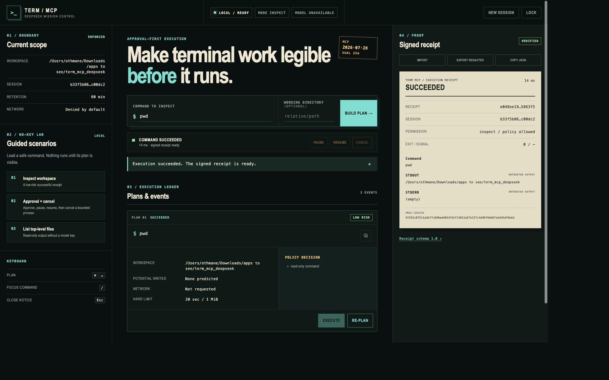

RECEIPT / 00114 ms
SUCCEEDED
The bounded command reached exit code 0 and the signature validates.
- EXIT
- 0
- SIGNAL
- —
An approval-first MCP control plane. See the command, risk, workspace, and hard limits before execution—then keep a signed receipt of what actually happened.
$ pwd
INTENT → PLAN → POLICY → APPROVAL → PROCESS → RECEIPT
A visible decision, not an opaque leap
DeepSeek is optional and isolated. Every proposed command enters a deterministic path that resolves permissions, risk, workspace, network access, timeout, and output limits before execution is possible.
SELECT AN INTENT
$ pwd
Read-only command inside the selected workspace.
One screen. The whole boundary.
The browser console keeps scope, risk, events, controls, output, and signed evidence in one inspectable surface. It works without a model key and loads no external UI assets.

Final states that do not blur together
Receipts separate status, policy, timing, exit code, signal, stdout, stderr, and signature. Sharing-safe exports remove command text, paths, arguments, and output, then sign the transformed artifact again.
The bounded command reached exit code 0 and the signature validates.
An approved process was stopped deliberately and recorded with its signal.
The process crossed its approved limit and ended as a distinct timeout state.
A receipt proves what this process recorded. It does not claim that an inspected repository or command was trustworthy. The distinction is part of the product—not a footnote.
Read the receipt modelUseful on an unfamiliar repository
Every public recipe is versioned, inspect-only, network-free, write-free, bounded, and executed by CI through the same production policy as MCP clients.
One engine across human and machine clients
Protocol JSON on stdout, diagnostics on stderr, lifecycle tied to the parent.
Bearer authentication, exact origin allowlist, rate and request limits.
Primary stateless contract, tested with the official Python SDK.
Legacy initialize and transport-session compatibility, explicitly tested.
No model key required
Install the immutable v1.0 tag, point the server at a repository, and open the local mission control. Inspect mode denies network and writes by default.
# Install the verified v1 release
pipx install "git+https://github.com/OthmaneBlial/term_mcp_deepseek.git@v1.0.0"
# Start inside the repository to inspect
cd /path/to/your/repository
term-mcp serve